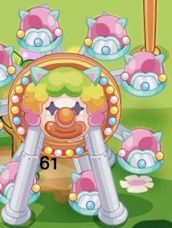
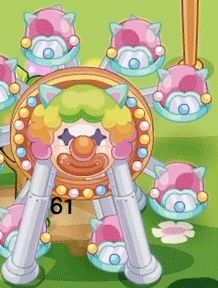
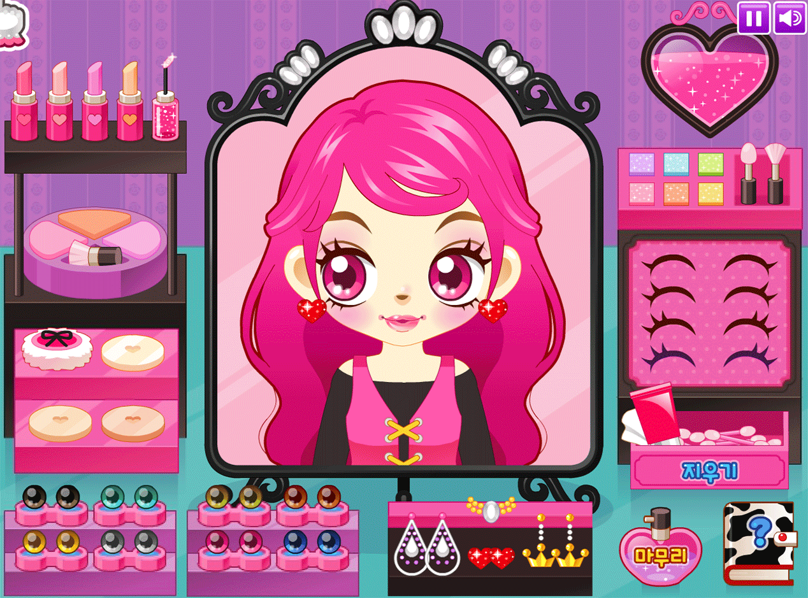
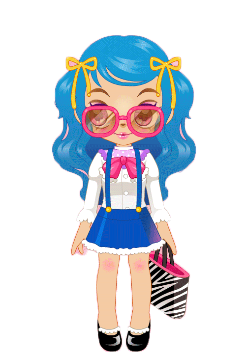

My Childhood Paradise
Mole's World
 

This is the largest children's virtual community in China. This game was built up based on our real city. Mole is the role that players act in the game. One player can only control one Mole. You can dress it up, decorate its house, change the name and skin color arbitrarily. Each Mole has a profession, attributes, and has a grade. Mole of different grades and occupations will be assigned different tasks. Your mission is to do tasks for upgrade and dress it more beautifully.
Super Mario
Just like the name, Mario is the protagonist of this game. The gameplay itself is very simple, you can control Mario by only using arrow keys on your keyboard. It is nicely paced and have a great deal of fun.
Sue's Party


This a series of game around the main character Sue. In this various type of games, girls will definitely find their favorite ones. It includes dress up, beauty, business, pet keeping, even car racing… The visual experience of this game is very pleasant, and the background music is also very relaxing. In addition, the setting of Sue is favorable. She is no longer just a virtual character for me, more like a partner in my game.